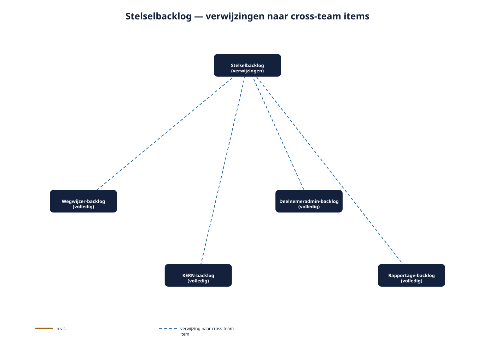
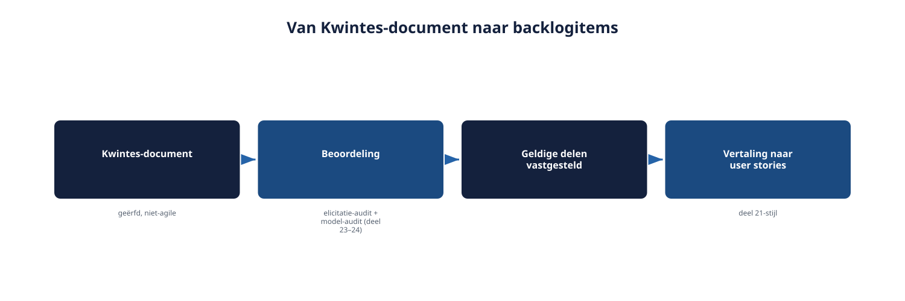
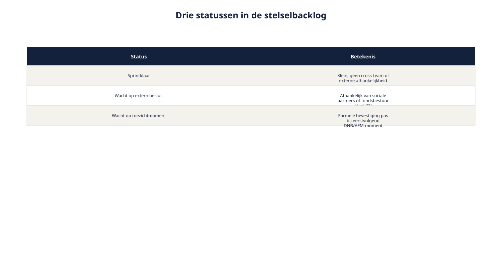

Deel 25 — RE@Agile Specialist: agile werken op stelselschaal
Slidedeck · Ductus-cursus Requirements Engineering · niveau 3 (specialist) · deel 25 van 30 · 18 slides
Slide 1 — RE@Agile Specialist
RE@Agile Specialist
Agile werken op stelselschaal
Cursus Requirements Engineering — Niveau 3, deel 25
Ductus
Slide 2 — Vandaag
Vandaag
- Vier teams, vier ritmes
- Een stelselbacklog: overzicht zonder centralisatie
- Het geërfde document en agile integratie
- Twee kloksnelheden, nu op stelselniveau
Slide 3 — "Klein" bij Wegwijzer.
"Klein" bij Wegwijzer.
Allesbehalve klein bij KERN.
Dezelfde classificatie, twee heel verschillende technische contexten.
Slide 4 — 1. Een stelselbacklog
1. Een stelselbacklog
Slide 5 — Eén grote, centrale backlog?
Eén grote, centrale backlog?
Ondermijnt precies het voordeel van agile werken op teamniveau.
Slide 6 — Figuur 25-1

Slide 7 — Alleen items die: classificatie middel/groot ÉN meer dan één team raken.
Alleen items die: classificatie middel/groot ÉN meer dan één team raken.
Niet meer, niet minder.
Slide 8 — Opdracht 25.1
Opdracht 25.1 — Hoort het in de stelselbacklog?
Vier items.
Individueel · 20 minuten
Slide 9 — 2. Het geërfde document en agile integratie
2. Het geërfde document en agile integratie
Slide 10 — Figuur 25-2

Slide 11 — Niet meteen herschrijven als backlog.
Niet meteen herschrijven als backlog.
Eerst beoordelen — dan pas vertalen naar user stories.
Slide 12 — 3. Twee kloksnelheden op stelselniveau
3. Twee kloksnelheden op stelselniveau
Slide 13 — Drie statussen
Drie statussen
| Status | Wacht op |
|---|---|
| Sprintklaar | — |
| Wacht op extern besluit | Sociale partners |
| Wacht op toezichtmoment | DNB/AFM-ritme |
Slide 14 — Figuur 25-3

Slide 15 — Opdracht 25.2
Opdracht 25.2 — Drie statussen toepassen
Twee items per status.
Tweetallen · 25 minuten
Slide 16 — Opdracht 25.3
Opdracht 25.3 — Een vakpaper-fragment schrijven
Individueel · 40 minuten
Slide 17 — Elk team behoudt zijn eigen classificatiedefinitie.
Elk team behoudt zijn eigen classificatiedefinitie.
Cross-team items krijgen een markering — geen opgelegde uniforme definitie.
Slide 18 — Volgende keer: deel 26
Volgende keer: deel 26
Management Specialist — beheer op stelselniveau
Met een verdieping naar aanbestedingen en programma's van eisen.